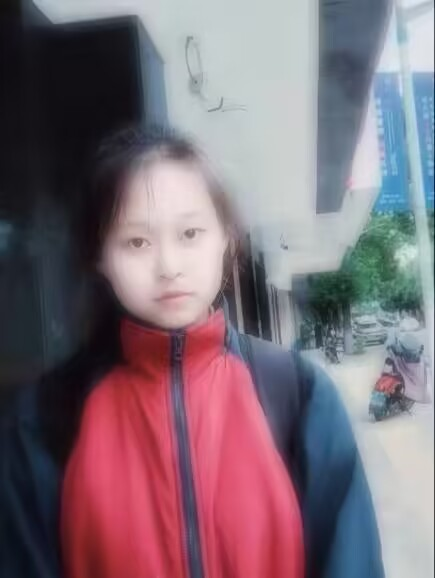

给廖艺的一些话：
亲爱的，当我和你在一起时，我的心情总是充满了欢乐和喜悦。我喜欢与你分享生活中的点滴，每一个微笑和眼神交流都让我感到无比的舒适和温暖。 你的存在让我的世界变得更加美好和有意义，你的聪明和智慧总是启发我，让我变得更加成熟和有思想。每一个和你在一起的瞬间，都是我最珍贵的回忆。 让我们继续相互支持和珍惜对方，共同走过这段美好的人生旅程吧。我会一直爱你，直到永远。
-- 吴师晴 --
520快乐

点我看好东西